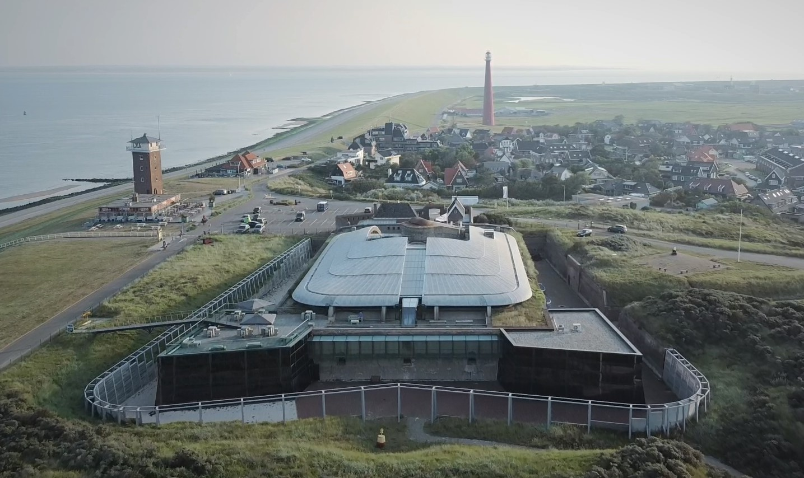

Fort Kijkduin

Treed in de voetsporen van Napoleon en sta oog in oog met roggen en haaien in het spannendste fort van Nederland!
In het museum kom je alles te weten over de historie van het ford. Rondom Fort Kijkduin hebben bijzondere gebreurtenissen plaatsgevonden
die van belang zijn geweest voor de Nederlandese geschiedenis. Ervaar bijvoorbeeld hoe het er aan toe ging bij de Slag bij Groote Keeten en
waan je onderdeel van het Engelse leger dat de Bataafse Republiek binnenviel in 1977. Wandel mee met Napoleon en ontdek hoe Fort Kijkduin
door de jaren heen is veranderd. Ook de Tweede Wereldoorlog komt aan bod.